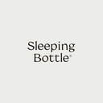

FAQ
자주묻는질문 10
- 유통기한이 어떻게 되나요?
슬리핑보틀
용기 상단에 별도로 표기가 되어있으며, 제조일로부터 2년입니다. - 보관은 어떻게 하나요?
슬리핑보틀
직사광선을 피해 서늘한곳(상온보관) 혹은 냉장보관이 가능합니다. - 기존에 복용하던 약과 같이 먹어도 되나요?
슬리핑보틀
슬리핑보틀은 혼합음료이기에 기존에 복용하시던 약과 같이 음용하셔도 괜찮습니다. - 무슨 맛인가요?
슬리핑보틀
타트체리와 천연 체리향이 첨가되어 있어서 체리맛에 가깝지만, 설탕이나 인공첨가물이 함유되어 있지 않아 부담없이 음용하실 수 있습니다. - 수면제인가요?
슬리핑보틀
슬리핑보틀은 수면제와 달리 자연성분으로 이루어진 혼합음료입니다. 타트체리, 감태추출물, SB 농축액등 12가지 천연성분으로 만들어져 부작용 걱정없이 안심하고 드실 수 있습니다. - 잠이 잘 오는건지 모르겠어요
슬리핑보틀
수면에 영향을 미치는 요인은 개인의 질환, 생활습관, 스트레스, 수면 패턴문제등 다양합니다. 취침 1~2시간 전 슬리핑보틀을 음용하시고 카페인 섭취 제한, 자기전 스마트폰 사용이나 TV시청을 삼가는 등 수면관리를 함꼐 해주시면 더욱 도움이 될 수 있습니다. - 마시면 바로 잡이 오나요?
슬리핑보틀
슬리핑보틀은 수면제와 같은 의약품이 아닌 음료이기에 잠들기 전 1~2시간 이내 음용 시 긴장이 완화되고 진정효과를 주어 릴렉싱되는 느낌과 함께 숙면을 취하실 수 있습니다. 또한 혼합음료이기에 부작용과 내성에 대한 걱정이 없어 꾸준히 음용하시는 것을 권장드립니다. - 음용 방법이 어떻게 되나요?
슬리핑보틀
잠들기 전 1~2시간 이내 1병(100)을 음용하시는것을 권장드리며, 기호에 따라 나눠드셔도 괜찮습니다. 침전물이 가라앉아 있을 수 있기에 섭취 전 충분히 흔들어 주시고, 기호에 따라 중탕하여 따뜻하게 서부치하시거나, 냉장고에 보관하여 시원하게 드셔도 좋습니다. - 어린아이들이 마셔도 되나요?
슬리핑보틀
슬리핑보틀은 자연성분으로 만들어진 혼합음료이기에 어린아이들도 음용가능합니다. - 주요성분이 무엇인가요?
슬리핑보틀
슬리핑보틀은 숙면에 도움이 되는 10가지 자연성분이 농축된 SB 농축액과, 감태추출물, 타트체리가 함유되어 있습니다.